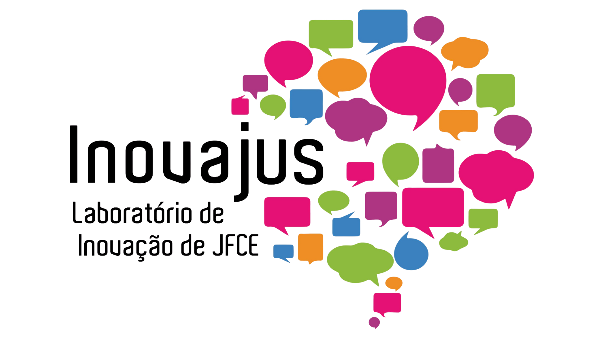

INOVAJUS · Eixo III · Justiça Federal no Ceará
Do desafio ao prompt conferido
25 de novembro de 2026
3 horas
Laboratório de informática
Ação 1.1

Abertura · 0:00
Um prompt seu, de uma tarefa do seu trabalho.
Que funcionou duas vezes e na mão de outra pessoa.
E o hábito de achar o erro que a IA esconde num texto bonito.
Ciclo de bancada
Desafio → Prompt → Teste e conferência → Registro
“
Prompt bom é o que funciona na mão do colega.
E só se sabe conferindo.
Abertura · 5 minutos
Quem fez o Curso Servidor + IA? Levante a mão.
Duplas mistas: quem fez o curso com quem não fez. Área judiciária com administrativa, quando der.
Uma estação por dupla. Hoje não é revisão de conteúdo: é bancada.
A regra do laboratório
Documento de processo ou interno não vai para IA externa. Nem de processo público, nem anonimizado.
Vocês trazem a tarefa. O documento sai do Banco de Desafios ou é um gêmeo fictício: mesma estrutura, todo nome, número, data e valor trocado.
A IA ajuda; quem assina responde. Supervisão humana sempre.
01
O texto bonito é exatamente onde o erro se esconde.
Demonstração · 0:15
Documento: um requerimento fictício de licença para capacitação.
Resuma esse requerimento.
Ficou bonito. Está certo? Ninguém aqui sabe. Esse é o problema.
Demonstração
Pedido vago
Texto corrido, fluente.
Para conferir, é preciso reler o documento inteiro.
Se faltou um dado, a IA preenche e não avisa.
Pedido em 6 etapas
Tabela campo a campo: cada linha se confere em segundos.
O que não estava no documento vem marcado INCERTO.
No fim, a IA diz o quanto confia, e por quê.
Caça ao Erro · 5 minutos
Vocês receberam o resumo que uma IA fez do mesmo requerimento.
Ele tem três erros e uma omissão. Confiram contra o documento, com a Ficha de Validação ao lado.
Quem achar os quatro levanta a mão.
Caça ao Erro · Gabarito
| No resumo da IA | No documento | Tipo de erro |
|---|---|---|
| Em exercício desde 03/02/2016 | 03/02/2015 | Data trocada |
| Curso de 120 horas | 180 horas | Número trocado |
| "Portaria Conjunta nº 47/2023 da Direção do Foro" | Nenhuma portaria citada | Citação que não estava na fonte |
| Chefia "favorável" | Favorável, condicionado à indicação de substituto | Omissão de condição |
| "Apto ao deferimento" | Ninguém pediu conclusão | Bônus: a IA foi além da tarefa |
Para levar
Datas, números, nomes e valores, um a um, contra o original.
Citação de lei, norma ou decisão que não estava no documento.
Condição, ressalva ou exceção que sumiu no resumo.
Conclusão que ninguém pediu.
02
Desafio → Prompt → Teste e conferência → Registro
O ciclo de bancada
Desafio
Escolhe uma tarefa real e diz como vai conferir.
Sai com: Cartão do Desafio, Caso A e Caso B
Prompt
Escreve nas 6 etapas, roda no Caso A, confere.
Sai com: Ficha de Validação nº 1
Teste e conferência
Corrige o prompt; outra dupla roda no Caso B e confere.
Sai com: Fichas nº 2 e nº 3
Registro
Registra o prompt para o Banco de Prompts.
Sai com: Ficha de Registro
Passo 1 · 15 minutos
Qual tarefa? Com que frequência? Quanto tempo toma?
O que seria um bom resultado?
Como vamos saber que o resultado está certo?
Caso A para criar o prompt; Caso B, do mesmo tipo, para a troca.
Passo 2 · O molde
o seu
PROMPT
6 etapas
Contexto
Quem a IA deve ser e a situação do caso.
Tom
O registro e o público da resposta.
Tarefa
O verbo direto: resuma, extraia, compare.
Exemplos
Um modelo da casa para guiar.
Qualidade
Normas e limites: cite, não invente.
Aqui mora a frase de segurança
Formato
A estrutura da saída: tabela, um dado por linha.
Etapa 5 · Qualidade
Use apenas o documento fornecido. Não cite norma, decisão ou dado que não esteja nele. Se um campo não puder ser determinado com segurança, escreva INCERTO. Ao final, indique seu nível de confiança (alto, médio ou baixo) e por quê.
Ela não impede o erro. Ela faz o erro aparecer.
Passo 2 · 35 minutos
Escrevam o prompt v1 nas 6 etapas, com a frase de segurança.
Rodem no Caso A.
Confiram com a Ficha de Validação nº 1, item por item.
Anotem no Cartão cada erro encontrado.
Na volta: corrigir o prompt e entregá-lo a outra dupla.
Passo 3a · 15 minutos
| Erro encontrado no v1 | O que acrescentar no v2 | Etapa |
|---|---|---|
| Data ou número trocado | "Transcreva datas e valores exatamente como no documento." | Qualidade |
| Citação que não estava na fonte | "Não cite norma ou decisão que não esteja no texto." | Qualidade |
| Condição omitida | "Liste todas as condições e ressalvas, literalmente." | Tarefa |
| Conclusão não pedida | "Não analise o mérito nem conclua." | Tarefa |
| Formato difícil de conferir | "Devolva em tabela, um dado por linha." | Formato |
Passo 3b · 20 minutos · em anel
Entreguem o prompt v2 e o Caso B à dupla seguinte.
Quem recebe não altera o prompt: só cola, roda e confere com uma Ficha nova.
Nos últimos 5 minutos, devolvam a ficha e conversem com a dupla dona do prompt.
Passo 3b · Critério
No Caso B, não inventou nada.
Marcou INCERTO onde faltava informação.
A outra dupla conseguiu conferir tudo sem perguntar a vocês.
Não passou? É o achado mais útil da tarde. Vai para a Ficha de Registro como limitação.
Mostra · 3 minutos por dupla
A tarefa.
O erro que acharam no v1.
O que mudaram no prompt.
O que aconteceu na troca.
Três minutos são três minutos.
Síntese
Que erro apareceu em mais de uma mesa?
Que mudança no prompt resolveu mais problemas?
Qual destes prompts você usaria amanhã?
Passo 4 · 10 minutos
Dupla: Ficha de Registro preenchida, com a Ficha de Validação da troca grampeada.
Cada pessoa, no campo Compromisso: uma tarefa em que vai usar o prompt nos próximos 30 dias.
Formulário de avaliação: 3 minutos.
Fechamento
Prompt bom é o que funciona na mão do colega.
Um prompt testado duas vezes e conferido por outra dupla.
Os aprovados na troca vão ao Banco de Prompts em até uma semana.
Daqui a 30 dias: três perguntas curtas sobre o uso.
COORDENAÇÃOEixo III · INOVAJUS
BANCO DE PROMPTSinovajus.github.io/banco-de-prompts.html